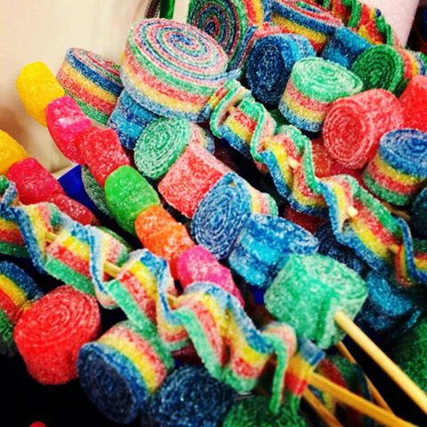

When School Food Policies Are Just Nuts
Grandmas presented pies and cakes, trays of fudge and cookies and had ice-cream cake and soda at the ready. Uncles and aunts brought chocolates and candy canes, and cousins found additional sweets hidden in cabinets when no one was looking.
But these were the holidays -- special times. Sweets were aplenty, but perhaps they really were just "treats" -- i.e., rare indulgences that are out of the ordinary.
Ordinarily, son eats mostly whole or minimally processed, un-sugared foods. Sweets come mostly in the form of fresh or dried whole fruits, or perhaps an after-dinner square or two of dark chocolate. Cakes, candies, cookies and sugary drinks are relatively rare in his diet. At least, so I thought.
It turns out that even though my wife and I determine what gets purchased, prepared and served at home, we have less control over what happens elsewhere: over the holidays, and especially at school.
We send our son to school with a packed lunch every day, and we decide what goes in his lunch bag. But food provision at school extends well beyond lunch bags. In fact, it extends well beyond lunchrooms and lunch periods.
In a recent paper in JAMA, I described some of the many less intuitive sources of food and drink at school. For instance, consider class parties -- for students' birthdays, religious holidays, cultural celebrations and other events. Additionally, teachers may use foods (often candy) as incentive or reward for classroom participation. Then there may be class projects (e.g., making frosting-drowned gingerbread houses) or learning activities using edible "manipulatives" (e.g., arithmetic with M&Ms). Furthermore, let's not forget about bake sales and other food-related fundraisers like selling candy bars or boxed cookies. Add this to various snack programs, concessions at sporting events, refreshments at assemblies, snack stops on field trips and assorted products from vending machines, and what you may have is quite regular exposure to highly-refined, usually sugared, ultra-processed fare.
Cakes, candies, cookies and other sweets are not necessarily "treats" at school (not rare or out of the ordinary). They can be routine and part of the regular diet.
This is a problem.
You'd have to be living under a rock not to know that obesity is epidemic, and diet and weight-related diseases -- like what had previously been called "adult-onset diabetes" -- are now occurring in children. I would bet most people appreciate that highly processed sugary items are a recipe for cavities, tooth decay and poor oral health. Some may even recognize that what we put in our kids' mouths becomes the actual building material for their developing bodies and brains.
One can imagine a parent arguing: "My kid is thin, healthy, has perfect teeth and is growing fine. Why should I care?" Good question.
One answer might be that silent internal derangements (both metabolic and inflammatory) that sugar-added and processed products incite precede overt trouble. Another, perhaps more-compelling, answer is that processed products can compromise children's academic potential.
As my colleague, renowned endocrinologist and nutrition expert Dr. David Ludwig, explains in his latest book, diets of highly refined carbohydrates can bring with them inattention, poor concentration and memory deficits. In other words, when we choose to feed our children (or allow our children to be fed) highly-processed sweets, we work against their scholastic success.
Why would parents allow this? Why would schools? And why do many existing school food policies focus very narrowly on keeping only healthy foods out of the building? Specifically, polices tend to focus on nuts -- i.e., banning them entirely.
But nuts aren't just healthy foods, they are very healthy foods. Nuts represent whole foods from plants, which is exactly the kind of foods we want to be eating. Nut consumption is associated with healthier weight, better health and longer life. Plus, nuts are filling and exemplify the kind of foods that can keep our kids satisfied, and keep them undistracted by avoidable cravings and other food-related inattention.
Yes, some children are allergic to nuts, and some of those allergies are severe -- life-threatening, even. But such allergies are rare, and would actually be even rarer if we gave kids nuts earlier in life (particularly peanuts, which although technically legumes, can be considered "nuts" for the purposes here).
Banning nuts is not supported by experts and does not serve students without allergies well, particularly when schools recommend refined, highly processed, mostly sweetened fare to replace these nutritious whole foods. Bans also do not protect children with allergy from exposure (e.g., classmates' hands that are peanut-buttered at home at breakfast may touch doorknobs, desks, playground equipment, etc.), providing effected kids false reassurance. Bans work against teaching children who have allergies to be self-reliant, to avoid exposures and to manage their conditions as they likely will have to for the rest of their lives.
Going back to the winter holidays, when my family and I flew back from staying with relatives (on a plane full of kids), I noted that the airline seemed less concerned with nuts than my son's school; bagged peanuts were passed all around the fuselage while my family and I ate peanut-butter-and-banana sandwiches I had packed.
My young niece and nephew, who were on the flight, had bought snacks prior to boarding and were comparing the "healthfulness" of their items: a bag of nuts for her and bag of Cheez-It crackers for him. Their discussion centered on calories per serving, grams of fat and milligrams of sodium, but all of these metrics missed the point.
Healthy vs. less-healthy is not about calories, components or constituents. It is about whole food vs. refined products. The part of the label that best conveys the distinction is the ingredient list: My niece's bag of nuts being just "nuts" (i.e., whole food from living botanical plants), my nephew's Cheez-Its being an amalgam of artificial ingredients, bearing little resemblance to actual sustenance (i.e., refined components from industrial processing plants).
School policies would do better to follow airline policies in allowing nuts. And they would do better to follow the lead of my niece, foregoing highly processed unhealthy fare and focusing on real whole foods. Optimizing health and learning should be expected in all school policy. Banning healthy foods from schools reflects policy that is just nuts!